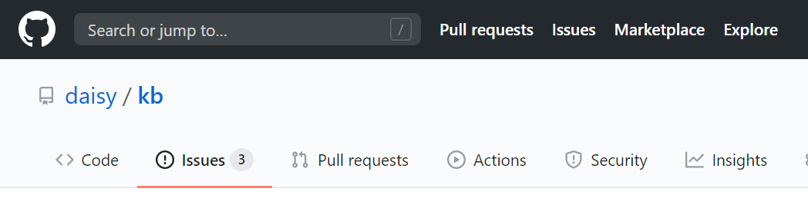
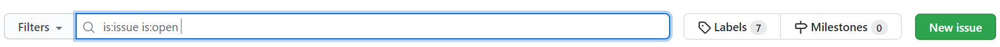
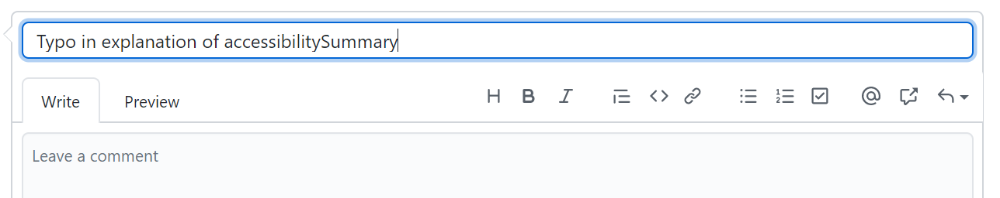
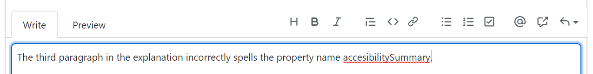

アクセシブル出版ナレッジベース
アクセシブル出版ナレッジベース
問題の報告
エラーレポート
当サイトはできる限り最新の情報を提供するよう努めておりますが、どんなに優れたサイトでもバグは存在します。誤字脱字、事実上古い情報や誤った情報、フォーマットのエラー、その他同様の問題を発見した場合には、我々の方で修正できるよう、問題の報告をお願いします。
ナレッジベースのソースページはGitHubリポジトリで管理されています。GitHubではissueの追跡と変更履歴の両方が提供されています。コンテンツと表示に関する問題を報告するには、新しいissueを発行し、問題の内容と、どのページで問題が発生しているかを説明するだけです。
GitHubに慣れていない場合は、次の手順に従って新しいissueを作成してください。
注記
新しいissueを作成するには、無料のGitHubアカウントが必要です。
-
「アクセシブル出版ナレッジベース」のGitHubリポジトリの［Issues］タブに移動します。

-
未解決のissueを確認したり、キーワード検索を試したりして、issueがまだ報告されていないことを確認します。

未解決のissueを検索するためのフィルター ボックスには、結果を未解決の問題のみに限定するために、キーワード「
is:issue is:open」が自動的に入力されることに注意してください。これらのキーワードはそのままにして、その後に検索する用語を追加します。 -
一致するissueが見つからない場合は、フィルターボックスの横にある［New issue］ボタンをクリックして新しいissueを作成します。

-
issueを送信するための空のフォームがある新しいページが開きます。最初のステップは、問題の内容が伝わりやすい短いタイトルを作成することです。

-
次に、issueのより詳細な説明を記入します。解決策がある場合は、それを加えてください。

表示の問題については、使用しているブラウザとオペレーティングシステムを特定してください。
-
最後に、フォームの下部にある「Submit new issue」ボタンをクリックしてissueを送信します。

重大な事実上の誤りについてはできるだけ早く修正するよう努めますが、それほど重大ではないissueについてはすぐにフィードバックが届かない場合があります。すべてのissueをできるだけ迅速に解決するよう努めておりますので、ご了承ください。皆様のフィードバックをお待ちしています。
デフォルトでは、GitHubはissueに対して行われたコメントのコピーを電子メールで送信するため、進捗状況を追跡するためにサイトを確認する必要はありません。
注記
上級レベルのGitHubユーザーは、明らかな間違いについては直接プルリクエストを送信することをお勧めします。別のissueを作成する必要はありません。
新しいトピックのリクエスト
バグの報告に加えて、ナレッジ ベースのカバーする新しいトピックのリクエストも歓迎します。私たちは常にカバーするトピックのリストを拡張しようとしていますが、出版は動的な分野であり、まだ私たちが認識していないコンテンツのアクセシビリティの問題があるかもしれません。
新しいページ（またはページセット）の提案がある場合は、バグレポートと同じ手順に従ってください。
新しいリクエストを開く前に、提案しようとしているトピックをサイト内で検索してみてください。そのissueはすでに取り上げられている可能性があります。情報の場所がわかりにくい場合は、その点も遠慮くなく提案してください。
注記
issueの追跡はヘルプフォーラムではありません。一般的な質問に対してはアドバイスが提供されますが、タイムリーな回答は保証されません。